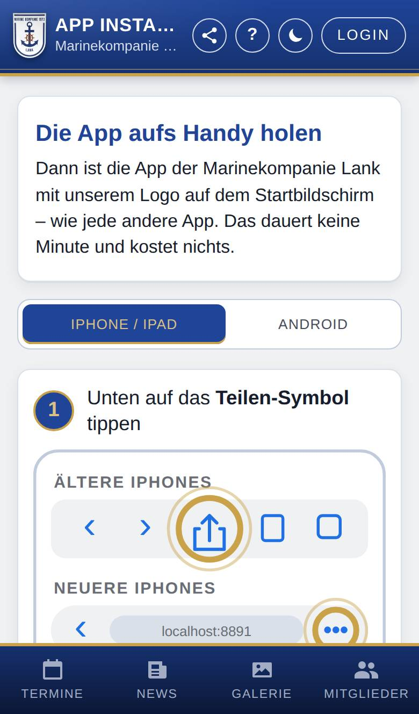
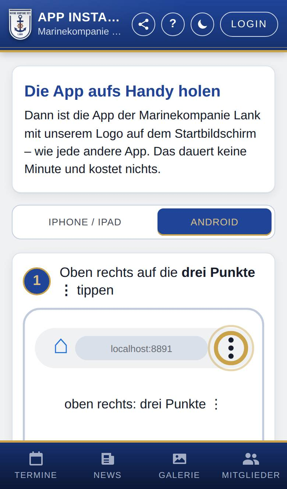

Die App aufs Handy holen
Die App der Marinekompanie Lank läuft im Browser und lässt sich wie jede andere App auf den Startbildschirm legen – ohne App-Store und kostenlos. Diese Seite zeigt dir Schritt für Schritt, wie das auf deinem Handy geht.

So öffnest du die Seite
- Tippe im Hinweis Die App aufs Handy holen oben auf So geht's.
- Mit Konto: Tippe unten auf Meins, wähle oben im Menü Konto und tippe auf App installieren.
Was du hier siehst
- App installieren (oben): erscheint nur, wenn dein Browser die Installation direkt anbietet (z. B. Chrome auf Android). Ein Tipp genügt.
- iPhone / iPad und Android: wählen die passende Anleitung. Die App wählt dein Gerät schon vor.
- Schritte mit Bildern: Die Bilder zeigen, wohin du tippst; die Stelle ist farbig umkreist.
- Anleitung weitergeben (unten): ein Link, der genau diese Anleitung öffnet, mit dem Knopf Link teilen.
So gehst du vor
Auf dem iPhone oder iPad
- Öffne die Adresse der App in Safari.
- Tippe unten auf das Teilen-Symbol (Quadrat mit Pfeil nach oben). Steht unten rechts nur •••, tippe zuerst darauf und dann auf Teilen.
- Wähle Zum Home-Bildschirm. Der Eintrag steht weiter unten in der Liste; wische nach oben, bis er erscheint.
- Tippe oben rechts auf Hinzufügen. Steht dort der Schalter „Als Web-App öffnen“, lass ihn eingeschaltet.
- Starte die App ab jetzt immer über das neue Symbol mit dem Logo. Die Anmeldung bleibt gespeichert.
Auf einem Android-Handy
- Öffne die Adresse der App in Chrome.
- Steht oben der Knopf App installieren, tippe darauf und bestätige. Fertig.
- Sonst zeigt die Anleitung unter Android die Schritte mit Bildern: Tippe in Chrome oben rechts auf die drei Punkte ⋮ und wähle App installieren (je nach Handy heißt der Eintrag auch „Zum Startbildschirm hinzufügen“).
- Bestätige mit Installieren bzw. Hinzufügen.

Die Anleitung an andere schicken
- Tippe unten auf der Seite auf Link teilen.
- Wähle z. B. WhatsApp oder E-Mail. Am Computer kopiert die App den Link.
Gut zu wissen
- In anderen Browsern auf dem iPhone (z. B. Chrome) fehlt Zum Home-Bildschirm oft. Die App zeigt dann einen Hinweis; kopiere die Adresse und öffne sie in Safari.
- Bitte nicht im Samsung-Browser installieren: Dort blockiert Google Play Protect die App fälschlich als „Unsichere App“. Die App bietet dann In Chrome öffnen an.
- Ist die Adresse in Facebook, Instagram o. Ä. geöffnet, klappt die Installation nicht. Die App zeigt dann Adresse kopieren; öffne die Adresse in Safari bzw. Chrome.
- Benutzt du die App schon installiert, steht hier „Alles erledigt“.
- Was du zuletzt geladen hast, bleibt auch ohne Internet sichtbar. Oben steht dann „Offline – angezeigt werden die zuletzt geladenen Daten.“
- Auf dem iPhone und iPad gibt es Benachrichtigungen nur in der installierten App, siehe Benachrichtigungen.